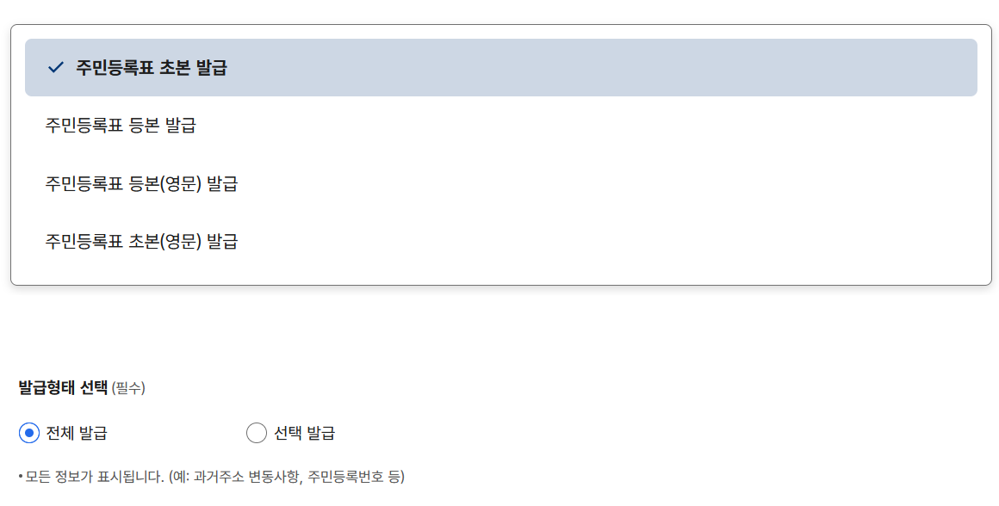
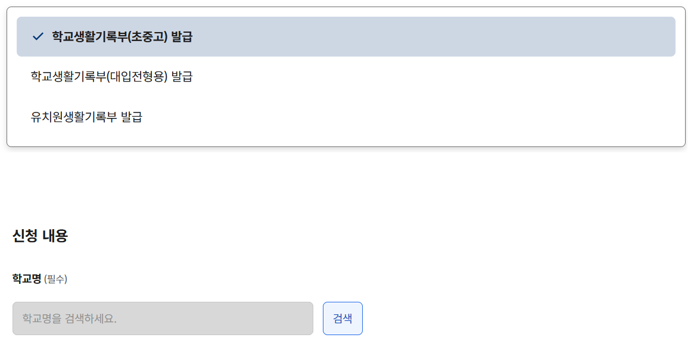

대학 꼭 가자!! 자주 묻는 질문
1. 주민등록표 초본 발급
정부24 주민등록표 초본 발급 바로가기(클릭)
'주민등록표 초본' 반드시 체크, 발급 형태에서 '전체 발급' 반드시 체크(선택 발급하면 과거 주소 확인이 안 돼서 농어촌전형 지원 불가)

2. 초등학교, 중학교 생활기록부 발급
정부24 생활기록부 발급 바로가기(클릭)
'학교생활기록부(초중고)' 반드시 체크(대입전형용 절대 아님!!!!)
초등학교 생기부: 학교명에 본인 졸업한 초등학교 검색해서 입력
중학교 생기부: 학교명에 본인 졸업한 중학교 검색해서 입력
